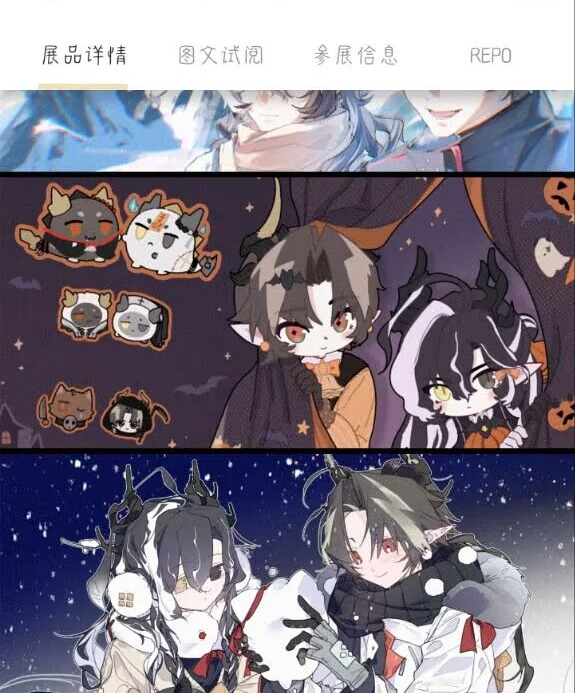

试阅 / EXCERPT
谈春
节选自《谈春》· 完整文本见下方文件
REPO / WINTER ANTHOLOGY · 2026
雪落在岁末，故事在纸上生温。
一间只在落雪时开门的小小展厅。
收录插画、短篇与未寄出的冬日来信，
也收下你路过时留下的一句话。

“雪落有信，见字如面。”
01 / THE COLLECTION
四件与冬天有关的展品。图像暂以示例素材代替，位置已经为正式稿件留好。
你的留言已寄往站长信箱。就着这场雪，慢慢看展吧。
此处预留素材位置。后续图片可放入 img/ 文件夹，并在 js/config.js 中补充条目。
02 / A PREVIEW
先读一小段故事，再决定要不要把整个冬天带走。
节选自《谈春》· 完整文本见下方文件
03 / FREETALK
交稿之后，五位作者又被拉住，小声补充了几句。
看完作者的话，也去看看大家贴的便利贴。 前往留言墙
04 / A LETTER TO THE AUTHORS
公开的留言贴到墙上，想私下说的，就写在这里。
不一定有回信，但每一封都会被认真读完。
05 / THE GUESTBOOK
匿名的、署名的、路过的。写下的话不寄给谁，只留在这面深蓝色的毛毡板上。
留言会立刻贴到墙上，并保存在你自己的浏览器里。刷新或下次再来，它们还在。
谢谢你的回声。